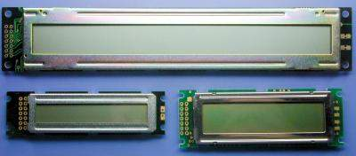

How to Use LCD Module
December 1, 2010

Character LCD module is one of the display device that well used for electornics equipments. Its ability to dislpaly alpha-numeric characters has contributed the improvement of function of the electronics devices. Especially its very low power consumption is suitable for battery powered devices. Of course it is also used for electronics handiworks as like 7-segment LED display.
HD44780 Character LCD Controller

HD44780 is one-chip character LCD display controller IC launched by Hitachi Ltd. in early '80s. The HD44780 or compatibles is embedded in most of character LCD modules manufactured now; therefore learning the function of HD44780 is a necessary and sufficient condition to use character LCD modules. Following shows the features of HD44780.
- Dot matrix LCD controller
- Generic MPU bus interface
- Integrated 80 character display data buffer
- Integrated character generator
- Integrated LCD panel driver
Therefore for that days it was a wonderful chip set that can build character LCD module with only a controller IC. It has occupied the market of character LCD controller and established the position of de facto standard. The HD44780 has being used for a quarter of a century without changes from the original specs. This is a rare case as an appication specific digital IC.
Block Diagram
Figure 1. HD44780 Block Diagram
Figure.1 shows the simplified functional block diagram of HD44780.
Instruction Decoder
Processes the instruction code written into the instruction register.
DDRAM
Display data buffer. It can hold 80 bytes (40 columns by 2 rows) of display data
CGROM/CGRAM
Character generator. It is divided in two parts, CGROM and CGRAM. The CGROM has read-only standard font. It can also be modified as mask option. The CGRAM is 5 bits by 64 locations read-write memory for user fonts.
Address Counter
Holds DDRAM/CGRAM address to be read/written at next data transfer
LCD Driver
16 common signals and 40 segment signals. It can control 8 columns by 2 rows LCD panel with only an HD44780.
Organization of LCD Panel
Figure 2. Various panel organizations

The maximum panel size that can control with an HD44780 itself is 8 columns by 2 rows. To control larger LCD panels upto 40 columns, one or more segment expansion driver chip, HD44100 or compatibles, is required as shown in Figure 2a. Also it can support various panel organezations described below.
16 columns by 1 row
Normally this is configured by 1-row driving mode (using only half of COM lines) and a segment expansion driver. To eliminate the segment expansion driver, it can also be configured based on 8 by 2 mode by placing the second row to right side of the first row as shown in Figure 2b. Therefor 1-row driving mode is not used except for 8 by 1 panel.
20 columuns by 4 rows
4-row panel is configured by placing the right half of charactrers to the lower of left half that shown in Figure 2c. The first line on the DDRAM is divided into first line and third line on the LCD panel, the second line on the DDRAM is divided into second line and fourth line on the LCD panel.
40 columuns by 4 rows
This is the maximum configuration that using two HD44780s. Each of upper/lower part of LCD panel is controlled by an HD44780. The host interface signals, RS, R/W and DB[7:0] are connected to the same pins of interface connector and only E signal is connected separately.
Cursor Line
The bottom line of each row is used for under-line cursor. In some modules, this line is separated from the character body on the LCD panel that shown in Figure 2d so that the user characters using the bottom line may not be expected appearance.
11-line Mode
This is one of the LCD driving modes that uses COM1 to COM10 for a row and COM12 to COM16 are not used. In this mode, the characters are 10 lines in height and can represent the discener like g, j, p, q and y. However two-row mode cannot be used in this configuration so that the 11-line mode is not used in generic CLCD modules.
Programming Model
Host Interface
There are three registers, instruction register, status register and data register that visible via host interface.
Instruction Register
Write only 8-bit register. When an instruction byte is written to this register, the instruction decoder executes the instruction. While the execution is in progress, busy flag (BF) is set. The processing time differs with instructions.
Status Register
Read only 8-bit register. The MSB indicates BF and the lower bits indicates value of address counter. The BF is a flag indicates that internal process is in progress and instruction register and data register are not accessible. Before accessing these registers, make sure that BF is cleared. When access the registers without this check, interval of each access must be much longer than execution time.
Data Register
Read/write 8-bit register. When a byte is written, it is written to the location of DDRAM or CCRAM indicated by address counter and then address counter changes to next. When read, address counter changes to next and then the location of DDRAM or CCRAM is read and the value is stored to the data register for next read. The read operation is also occured on Address Set incstruction. The BF is set during these operations.
Intrenal Reigster
Figure 3. DDRAM and CGRAM

The internal registers are not accessible via host interface. They are accessed indirectly by instructions or via data register.
DDRAM
Display data buffer that holds character code. The address range is 00h to 7Fh but only 80 bytes are implemented as shown in Figure 3a. The characters located in 00h to 27h is displayed in the first row and others are displayed in the second row. (Figure 3a)
CGRAM
Character pattern buffer as a part of the character generator. (Figure 3a) The address range is 00h to 3Fh. In 8-line mode, each 8 locations corresponds to a user character so that 8 user character patterns can be registered in it.
Address Counter
Holds an address of DDRAM or CGRAM to be read/written next. The value is changed to next (direction is defined by instruction) on access to the data register. It can also be changed to next or loaded a new value. When the value gets out of implemented area of DDRAM, it jumps to the next impmemented area. The cursor is displayed at the character being addressed by the address counter.
Display Offset Register
Undocumented register that holds the address of first character displayed at left end of the first row. The range of the value is 00h to 27h. The address of first character of the second row is 40h added to the value. The characters that pushed out appears at opposit end of the row. The value is changed to next on data register acces if shift operation is enabled by instruction. It can also be changed to next or cleared by instruction but cannot load a new value.
Instructions
The data written into the instruction register is decoded and executed by instruction decoder. List 1 shows the each instruction.
Table 1. Instruction Code of HD44780
| Instruction | Opcode | Description |
|---|
| b7 | b6 | b5 | b4 | b3 | b2 | b1 | b0 |
|---|
| Clear Display | 0 | 0 | 0 | 0 | 0 | 0 | 0 | 1 | Fills DDRAM with 0x20 and set DDRAM address 00h to the address counter. |
| Cursor Home | 0 | 0 | 0 | 0 | 0 | 0 | 1 | * | Sets DDRAM address 00h to the address counter. *:Don't care |
| Entry Mode Set | 0 | 0 | 0 | 0 | 0 | 1 | I/D | S | Sets the direction of address counter and specifies display shift
(updating display offset register) on data read/write.
I/D=1:Increment, S=1:With display shift |
| Display ON/OFF | 0 | 0 | 0 | 0 | 1 | D | C | B | Sets display, under-line cursor and block cursor on/off.
D=1:Display ON, C=1:Under-line cursor ON, B=1:Block cursor ON |
Move cursor
and Shift display | 0 | 0 | 0 | 1 | S/C | R/L | * | * | Increment/decremet address counter and display offset register.
S/C=1:Shift display, S/C=0:Move cursor,
R/L=1:Right shift, R/L=0:Left shift |
| Function Set | 0 | 0 | 1 | DL | N | F | * | * | Configure operating mode. DL=1:8-bit bus, DL=0:4-bit bus
N=1:2-row mode, N=0:1-row mode, F=1:11-line mode, F=0:8-line mode |
| Address Set (CGRAM) | 0 | 1 | Address(00h..3Fh) | Sets CGRAM address to the address counter. After this instruction,
CGRAM is accessed via data register |
| Address Set (DDRAM) | 1 | Address(00h..67h) | Sets DDRAM address to the address counter. After this instruction,
DDRAM is accessed via data register |
Bus Width and Initialization
Figure 4. Software Reset and Initialization
There are two configurations on bus width, 8-bit mode and 4-bit mode. In 4-bit mode, each data byte to/from the register is transferred in two bus cycles via DB7 to DB4. The first cycle transfers upper 4 bits and the following cycle transfers lower 4 bits. This sequence must be atomic. The host interface becomes unknown state in case of the bus sequence is interrupted by system reset or any other reason.
The HD44780 does not have an external reset signal. It has an integrated power-on reset circuit and can be initialized to the 8-bit mode by proper power-on condition. However the reset circuit can not work properly if the supply voltage rises too slowly or fast. Therefore the state of the host interface can be an unknown state, 8-bit mode, 4-bit mode or half of 4-bit cycle at program started. To initialize the HD44780 correctly even if it is unknown state, the software reset procedure shown in Figure 4 is recommended prior to initialize the HD44780 to the desired function.
General Remarks on Using CLCD Modules
Figure 5a shows the typical circuit diagram to use the CLCD module. The interface pin connections on the module is shown in Figure 5b in pin layout of single-inline or dual-inline. Some modules have additional two pins for the back-light. Note that Vcc and GND are reversed on some modules.
Figure 5. Basic Configuration of CLCD System

Host Interface Timings
The host interface type of HD44780 is for 6800 series becuse Hitachi had supplied Motorola 6800 series as a second source. However it is intended to use at 1 to 2 MHz bus frequency so that it is difficult to connect to modern high speed bus and also most microcontroller does not have extrenal bus. Thus the CLCD modules are attached to the GPIO port instead of the system bus on most case.
Figure 5b shows the typical timing diagram of the host interface. The bus timing is not that fast enough compared to toggling speed of GPIO port. Consderation of bus timing, especially pulse width of E signal, is needed. The bus timing varies by supply voltage and also there are some difference of timings among the compatible chips. When control the module as fast as maximum speed, make sure the detailed timing of the controller chip on the CLCD module to be used.
Processing of Unused Pins
Figure 6. 4-bit Bus Configuration

Lower 4 bits of the data bus, DB3 to DB0, are not used in 4-bit mode. The datasheet says that these pins should be left opened in 4-bit configuration as shown in Figure 6a. However they are tied to GND in a number of cases as shown in Figure 6b.
- Left opened
- This configuration is recommend by datasheet. All signals except for E have pull-up register on each pin so that the logic level becomes high when it opened and no problem on most case.
- Tied to GND
- In some case that highly requires a noise immunity, e.g., attaching the LCD module with a long cable, this configuration is also preferred. There is no problem unless read operation is not used. However when control R/W signal to read from the module, there is a risk of short circuit of output from DB3 to DB0.
Polling or Delay
There are two methods, Polling and Delay, to wait for the end of internal process of the HD44780. The first one continues to read status register until BF goes zero and the other skips the internal processing time by a simple delay. Both these methods are defined by datasheet. Because there is the BF for this purpose, the polling method is considered primary. However actually the delay method is used in most products. Follows are comparison of advantage/disadvantage between the two methods due to the differences.
- Display speed
- In polling method, the display speed is determined by actual internal processing time. In delay method, delay time must be long enough considering sufficient margin to the internal processing time, two times longer than defined time at least. Therefore the polling method can output the characters two times faster than delay mtethod.
- CPU load
- The internal processing time of LCDC is too long from view point of CPU. For exsample, a microcontroller running at 72 MHz consumes 3000 clock cycles to put a character into the LCD. Because the polling method is just a busy waiting, the processor time is used for such the useless process. The delay method can halt the CPU or switch the task during the delay time. These are advantages on power consumption and system throughput.
- Robustness
- In polling method, system stops in case of busy flag sticks high due to a hard fault of CLCD module. To avoid this risk, a timeout process is needed in the polling loop. The delay method is not affected by the hard fault and even if the module is not attached.
- Hardware
- The delay method does not need to read status register and the R/W signal can be tied to GND. This eliminates a bit of GPIO port.
Contrary to general belief, the advantage of the polling method is only display speed but it is not even an advantage. Because the response time of LCD panel is about 100 miliseconds, such the fast update is an useless feature. Thus the delay method is much superior in most feature to the polling method.
Electric Potential of Metal Parts
Photo 2. Frame-GND Jumper

Most CLCD module uses a metal frame to fix the LCD panel onto the PCB and it can be floated or tied to GND with a solder jumper that shown in Photo 2. If not, the metal frame is tied to GND. When mount the module on the metal case, the metal frame should be disconnected from GND in order to avoid a short circuit of SG and FG. When mount it on the plastic case or without the case, the metal frame should be grounded to avoid electric damages due to ESD.